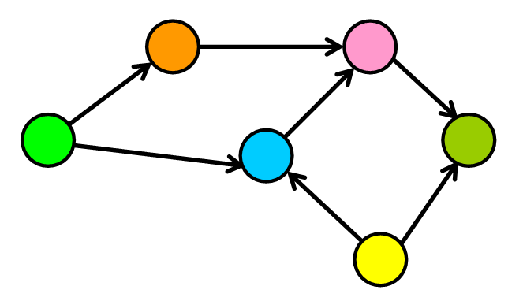
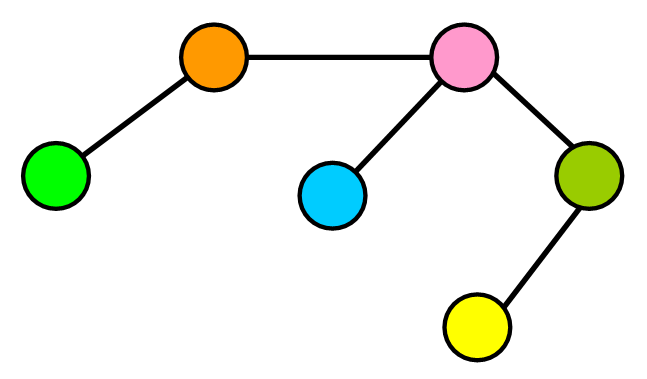
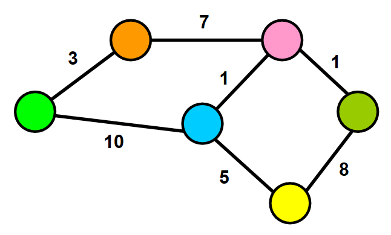
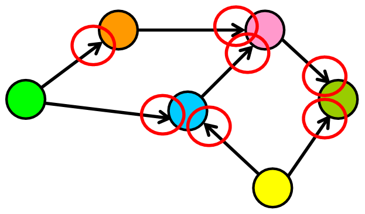
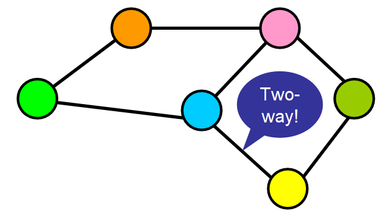

It doesn't need to have a root node (not every node needs to be
accessible from a single node)
It can have cycles (a group of nodes whose paths begin and end at the
same node)
Cycles are not always “isolated”, they can be one part of a larger
graph. You can detect them by starting your search on a specific node
and finding a path that takes you back to that same node.
Any number of edges may leave a given node
A Path is a sequence of nodes on a graph
Graph Types
Complete Graph
All nodes connect to all other nodes
Dense Graph
A graph with lots of edges.
"Dense graphs have many edges. But, wait! ⚠️ I know what you must be
thinking, how can you determine what qualifies as “many edges”? This
is a little bit too subjective, right? ? I agree with you, so let’s
quantify it a little bit: Let’s find the maximum number of edges in
a directed graph. If there are |V| nodes in a directed graph (in the
example below, six nodes), that means that each node can have up to
|v| connections (in the example below, six connections). Why?
Because each node could potentially connect with all other nodes and
with itself (see “loop” below). Therefore, the maximum number of
edges that the graph can have is |V|\*|V| , which is the total
number of nodes multiplied by the maximum number of connections that
each node can have."

Sparse Graph
Sparse Graph: A graph with few edges
When the number of edges in the graph is significantly fewer than
the maximum number of edges, the graph is sparse.

Weighted Graph
Weighted Graph: Edges have a cost or a weight to traversal

Directed Graph
Directed Graph: Edges only go one direction

Undirected Graph
Undirected Graph: Edges don't have a direction. All graphs are
assumed to be undirected unless otherwise stated

Ways to Reference Graph Nodes
With a Node Class
Uses a class to construct a node and define the neighbors as properties of each node.
class GraphNode {
constructor(val) {
this.val = val;
this.neighbors = [];
}
}
let a = new GraphNode("a");
let b = new GraphNode("b");
let c = new GraphNode("c");
let d = new GraphNode("d");
let e = new GraphNode("e");
let f = new GraphNode("f");
a.neighbors = [e, c, b];
c.neighbors = [b, d];
e.neighbors = [a];
f.neighbors = [e];
With an Adjacency Matrix
The row index will corespond to the source of an edge and the column
index will correspond to the edges destination.
When the edges have a direction, `matrix[i][j]` may not be the same
as `matrix[j][i]`
It is common to say that a node is adjacent to itself so
`matrix[x][x]` is true for any node
Will be O(n^2) space complexity
With an Adjacency List
Seeks to solve the shortcomings of the matrix implementation. It uses
an object where keys represent node labels and values associated with
that key are the adjacent node keys held in an array.
class Graph {
constructor() {
this.adjList = {};
}
addVertex(vertex) {
if (!this.adjList[vertex]) this.adjList[vertex] = [];
}
addEdges(srcValue, destValue) {
this.addVertex(srcValue);
this.addVertex(destValue);
this.adjList[srcValue].push(destValue);
this.adjList[destValue].push(srcValue);
}
buildGraph(edges) {
edges.forEach((ele) => {
this.addEdges(ele[0], ele[1]);
});
return this.adjList;
}
breadthFirstTraversal(startingVertex) {
const queue = [startingVertex];
const visited = new Set();
const result = new Array();
while (queue.length) {
const value = queue.shift();
if (visited.has(value)) continue;
result.push(value);
visited.add(value);
queue.push(...this.adjList[value]);
}
return result;
}
depthFirstTraversalIterative(startingVertex) {
const stack = [startingVertex];
const visited = new Set();
const result = new Array();
while (stack.length) {
const value = stack.pop();
if (visited.has(value)) continue;
result.push(value);
visited.add(value);
stack.push(...this.adjList[value]);
}
return result;
}
depthFirstTraversalRecursive(
startingVertex,
visited = new Set(),
vertices = []
) {
if (visited.has(startingVertex)) return [];
vertices.push(startingVertex);
visited.add(startingVertex);
this.adjList[startingVertex].forEach((vertex) => {
this.depthFirstTraversalRecursive(vertex, visited, vertices);
});
return [...vertices];
}
Node Class Examples
class GraphNode {
constructor(val) {
this.val = val;
this.neighbors = [];
}
}
function breadthFirstSearch(startingNode, targetVal) {
const queue = [startingNode];
const visited = new Set();
while (queue.length) {
const node = queue.shift();
if (visited.has(node.val)) continue;
visited.add(node.val);
if (node.val === targetVal) return node;
node.neighbors.forEach((ele) => queue.push(ele));
}
return null;
}
function numRegions(graph) {
let maxLength = 0;
for (node in graph) {
if (graph[node].length > maxLength) maxLength = graph[node].length;
}
if (maxLength === 0) {
return (length = Object.keys(graph).length);
} else {
return maxLength;
}
}
function maxValue(node, visited = new Set()) {
let queue = [node];
let maxValue = 0;
while (queue.length) {
let currentNode = queue.shift();
if (visited.has(currentNode.val)) continue;
visited.add(currentNode.val);
if (currentNode.val > maxValue) maxValue = currentNode.val;
currentNode.neighbors.forEach((ele) => queue.push(ele));
}
return maxValue;
}
Traversal Examples
With a Graph Node Class
function depthFirstRecur(node, visited = new Set()) {
if (visited.has(node.val)) return;
console.log(node.val);
visited.add(node.val);
node.neighbors.forEach((neighbor) => {
depthFirstRecur(neighbor, visited);
});
}
function depthFirstIter(node) {
let visited = new Set();
let stack = [node];
while (stack.length) {
let node = stack.pop();
if (visited.has(node.val)) continue;
console.log(node.val);
visited.add(node.val);
stack.push(...node.neighbors);
}
}
With an Adjacency List
function depthFirst(graph) {
let visited = new Set();
for (let node in graph) {
_depthFirstRecur(node, graph, visited);
}
}
function _depthFirstRecur(node, graph, visited) {
if (visited.has(node)) return;
console.log(node);
visited.add(node);
graph[node].forEach((neighbor) => {
_depthFirstRecur(neighbor, graph, visited);
});
}
In the OSI Network Model, briefly describe what protocol each layer
uses.
Layer
Protocol and description
Application
HTTP is a common Application Layer protocol. Data transmitted on this layer will
interact
directly with applications.
Presentation
JPEG, GIF are examples of protocols at this layer. This is where the data gets
translated
into a presentable format.
Session
RPC (Remote Procedure Call): Includes protocols responsible for authentication
and data
continuity. May authroize a client with a server or re-establish a dropped
connection.
Transport
TCP/UDP: These processes focus on data integrity and connectivity
Network
IP: Manages connections between remote networks, transferring packets across
intermediary
devices.
Data Link
Ethernet : Deals with connections directly from one machine's network interface
to another.
Frames targeting different MAC addresses are transferred here. This layer is
primarily used
by machines in local networks.
Physical
Wi-Fi (802.11) and DSL : Translate from raw electrical signals to bits and bytes
of data.
In the TCP/IP model, briefly describe the 4 layers
Layer
Protocols and application
Application
HTTP, HTTPS, FTP, SMTP, etc. Includes protocols related to user user-facing data.
Transport
TCP and UDP. Focuses on connectivity between clients and servers.
Internet
IP. Where data is processed in packets, and where routing is handled with IP
addresses. This
layer focuses primarly on connecting separate networks together using the Internet
Protocol
(IP).
Link
Ethernet. This layer is the lower-level communication, concerned with getting data
from one
local network resource to another.
What are some use cases for TCP protocol?
Anytime data integrity is important:
Websites
File downloads
streaming videos/audio : where watching videos or listening to podcasts you may need
to see
every frame.
What are some use cases for the UDP protocol?
When performance is more important than quality:
VOIP (Voice over IP)
Real-time video : Here you want to keep pace with the video as it is real-time so
missing a
packet isn't as important as keeping pace with the video.
Network services
What is a TLD?
Top level domain: The last part of the domain. e.g.: .com, .net, .org
What is a second-level domain
What does TCP stand for?
Transmission Control Protocol : Used when you want reliable connections such as web browsing,
downloading files, fetching email, streaming music or videos.
What does UDP stand for:
User Datagram Protocol: Used when you don't mind a more unreliable connection, but real time
interactivity is more important. Voice Over IP, Video Chat are examples of where you might
use UDP
What is a MAC Address?
A hardware address assigned to every physical networking device on a network. They look like a
series
of Hexidecimal values like ea:de:36:d9:5a:b8; They are used to communicate on the local
network
ONLY.
Describe an IP address
An address assigned to a networking device. Usually assigned by an ISP or a router on a local
network
using DHCP. They are used to route connections across multiple networks. Example: IPV4:
192.168.1.1
Describe a Port
Represents a TCP/UDP connection on an actual computer. Valid ports are in the range from 0 -
65535.
Used by the operating system of a computer to route TCP connections to the right program
running on
a computer. These programs can be said to be "listening" on a port. No two programs are
allowed to
listen on the same port at once.
What are the default ports for web servers?
HTTP port 80, and HTTPS port 443.
What is a Network Hub?
A device which hooks multiple computers together over ethernet and blindly repeats ethernet
packets
to all the other devices on a local area network.
What is a network switch?
A device which intelligently hooks multiple computers together over ethernet and sends
ethernet
packets to the correct devices on a local area network based on MAC addresses.
What is a router?
A device which is responsible for routing IP packets BETWEEN Different networks.
What is an IP Address
The internet protocol address assigned to a particular networking device
What is a domain name?
A human readable name assigned to an IP address. Examples: google.com or appacademy.io.
What is DNS?
Domain Name System: A protocol (on UDP port 53) that allows our computer to talk to a DNS
Server and
resolve a Domain Name into an IP address. Example: google.com might resolve to 172.217.6.142.
What is a DNS A Record?
This record directly maps a domain name to an IPv4 Address
What is a DNS AAAA record?
This directly maps a domain name to an IPv6 Address
What is a CNAME record?
This maps a domain name to another domain name. An alias, you might say.
What is an MX record?
This defines the mail server for a domain.
What is an NS record?
This defines the DNS Servers for a zone (domain)
What is an SOA?
Start of Authority: Defines which DNS Server is the authority for a zone (domain)
In the IP packet header, where do you discover whether this is an
IPv4 or
IPv6 packet?
In the version. This is a binary number. IPv4 = 0100; IPv6 = 0110. The version number is the
1st->4th
bit in the packet
How many octets make up an IPv4 address?
4 octets: 192.168.1.1 for example
How is an IPv6 number made up?
IPv6 addresses are made up of a 128bit number
IPv6 addresses are typically represented as hexidecimal, with every 4 digits
separated by a ':'
Example: 2001:0db8:85a3:0000:0000:8a2e:0370:7334
Describe the rules for reformatting an IPv6 address
Example: 2001:0db8:85a3:0000:0000:8a2e:0370:7334
You can replace 4 zeroes in an IPv6 address with only 1 zero
Leading zeroes can be removed (0370 -> 370)
An entire string of zeroes can be removed, but you can only do this once
The above IPv6 string can be reformatted with these rules as follows:
2001:db8:85a3::0:8a2e:370:7334
Describe an IPv6 header
The IPv6 header
Which version is this IP header?
IPv4 : Identified by the first 4 bits on the header, 0100 = 4. Also, this header has many
additional
fields included in it. IHL, DSCP, ECN, Total Length, Identification, Flags, Fragment Offset,
Time To
Live, Protocol, Header Checksum and Options. Notice the 3 fields that are the same between
IPv4 and
IPv6 headers: Version, Source IP Address and Destination IP Address
Identify which IP version this header is:
IPv6: Notice many fewer fields (8 vs 14), but has Version, Source IP Address and Destination
IP
Address in common
Which TCP/IP Layer does the IP Header reside?
The Internet Layer (IP)
In the OSI Model, which layer do Hubs, Switches and Routers exist
at?
Is a linked list a graph?
Yes!
What is a Tree?
A tree is a graph that does not contain any cycles. Note the image below. Tree 4 is a graph in
mathematics, but in computer science it is not.
Define a binary tree
A binary tree is a tree where nodes have at most 2 children. Graphs 1, 2 and 3 are all binary
trees
shown below.
Define the three binary tree depth-first searches (traversing the
tree)
Pre-order traversal : 9:00 : S, L, R
In-order traversal : 6:00 : L, S, R
Post-order traversal : 3:00 : L, R, S
Determine the nodes to be searched in pre-order traversal, in the
following
graph:
Determine the nodes to be searched in in-order traversal, in the
following
graph:
Determine the nodes to be searched in post-order traversal in the
following
graph:
Write a recursive function to print a binary search tree inOrder
function inOrderPrint(root) {
if (!root) return;
inOrderPrint(root.left);
console.log(root.val);
inOrderPrint(root.right);
}
Write a recursive function to print a binary search tree in
PostOrder
function postOrderPrint(root) {
if (!root) return;
postOrderPrint(root.left);
postOrderPrint(root.right);
console.log(root.val)
}
Write a recursive function to print a binary search tree in PreOrder
function inPreOrder(root) {
if (!root) return;
console.log(root.val);
inPreOrder(root.left);
inPreOrder(root.right);
}
Write a recursive function to perform a breadth-first search.
function printBreadthFirst(root) {
let queue = [];
queue.push(root);
while (queue.length) {
let currNode = queue.shift();
if (currNode.left) queue.push(currNode.left);
if (currNode.right) queue.push(currNode.right);
console.log(currNode.val);
}
}
Write a recursive function that returns an array in postOrder.
function postOrderArray(root) {
if (!root) return [];
return [
...postOrderArray(root.left),
...postOrderArray(root.right),
root.val
]
}
Write a function that returns an array in pre-order order.
function preOrderArray(root) {
if (!root) return [];
return [
root.val,
...preOrderArray[root.left],
...preOrderArray[root.right]
]
}
Write a function that returns an array inOrder order.
function inOrderArray(root){
if (!root) return [];
return [
...inOrderArray(root.left),
root.val,
...inOrderArray(root.right)
]
}
Write a function that adds a node to a binary search tree
function add(root, val) {
if (!root) //root is null
{
let newNode = new Node(val);
root = newNode;
}
if (val < root.val) {
if (root.left === null) {
let newNode = new Node(val);
root.left = newNode;
} else {
add(root.left, val);
}
else if (val > root.val) {
if (root.right === null) {
let newNode = new Node(val);
root.right = newNode;
} else {
add(root.right, val);
}
}
Write a function to search a binary search tree recursively for a
value. If
the value is found, return true. Otherwise return false.
Write an iterative search for a binary tree, returning true or false
if the
value is found.
function searchIter(root, val) {
let currNode = root;
while (currNode) {
if (currNode.val < val) {
currNode = currNode.right;
} else if (currNode.val > val) {
currNode = currNode.left;
} else if (currNode.val === val) {
return true;
}
}
return false;
}
What are the two properties that make a Binary Tree a Binary Search
Tree
The left subtree values must be less than the root.
The right subtree values must be greater than the root.
Define a graph
A graph is a collection of nodes and any edges between those nodes.
Are linked lists a subclass of a graph?
Yes!
Are trees a subclass of graphs?
Yes!
Are binary search trees a subclass of graphs?
Yes!
Name two ways we can create a graph
Using a class: GraphNode with two properties: val, and neighbors = []
Using an adjacency list: graph = { 'a' : ['b'], 'b' : ['a'] }
Write a breadthFirstSearch for a graph, iteratively.
let graph = {
'q': ['r'],
'r': ['q'],
's': ['t'],
't': ['s', 'u', 'v'],
'u': ['t', 'v'],
'v': ['u', 't'],
'w': []
};
function breadthFirstSearch(graph, startingNode, targetVal) {
let queue = [ startingNode ];
let visited = new Set();
while(queue.length) {
let node = queue.shift();
if (visited.has(node)) continue;
visited.add(node);
if (node === targetVal) return true;
queue.push(...graph[node]);
}
return false;
}
breadthFirstSearch(graph, graph['t'], 'q'); //returns true;
breadthFirstSearch(graph, graph['q'], 'c'); //returns false;
Write a depth-first Search on the adjacency list graph.
Note with the following: If your graph has disjointed subgraphs - in that there is no way to
move
from one subgraph to another, your starting node is ONLY the subgraph you want to search
through.
Also note, this algorithm only works on graphs with NO cycles. We won't be tested on
searching
through a cycle for depth-first, so set that topic aside. Also note, mathematicians consider
cycles
as a graph. Computer scientists do not.
const depthFirst = (graph, node, targetVal, visited = new Set()) => {
if (node === targetVal) return true;
visited.add(node);
for (let neighbor of graph[node]) {
if (visited.has(neighbor)) continue;
if (depthFirst(graph, neighbor, targetVal, visited)) {
return true;
}
}
return false;
};